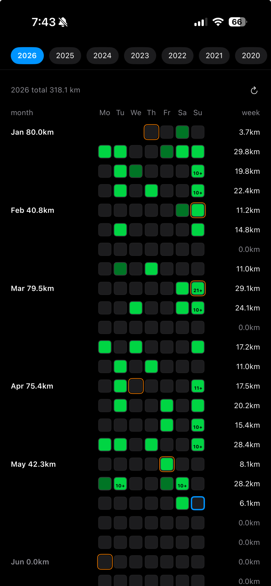
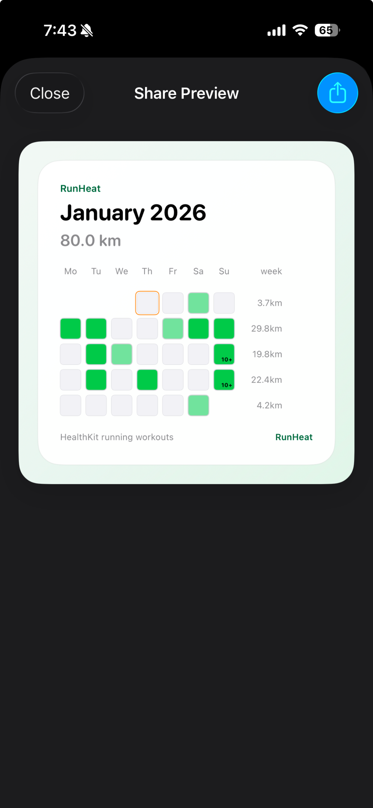

Yearly heatmap
Review a full year of running at a glance, with daily distance represented by color intensity.
Running heatmaps from Apple Health
Turn your Apple Health running workouts into a yearly heatmap, inspect daily sessions, and share clean snapshots of your running history.

What it does
Review a full year of running at a glance, with daily distance represented by color intensity.
Tap a date to check session-level distance, pace, start time, and data source without leaving the heatmap.
Create clean yearly, monthly, and weekly heatmap cards for sharing your running progress.

Privacy
RunHeat requests read-only access to workout records from Apple Health and uses running workouts only. The app is built around reviewing and sharing your running history, not collecting unrelated health data.
Health data permissions are managed by iOS, and you can change access at any time in the Health app or Settings.